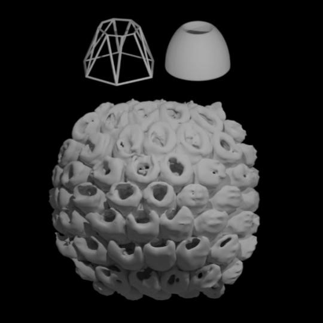
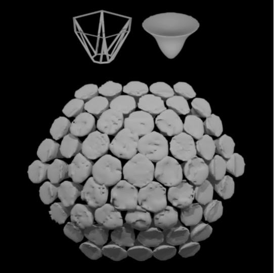

Generative AI Manipulation for 3D Texture Synthesis
Abstract
Generative AI models have revolutionized 2D image tasks, including manipulation, style transfer, and novel image synthesis, enabling neural networks to create complex and aesthetically appealing visuals. However, similar progress in 3D object generation has been hindered, partly due to the scarcity of large, diverse datasets. In response, we present Deep Single-Object Manipulation (DeepSOM), a novel 3D manipulation framework based on a convolutional backbone. Our approach requires only a single input pair: a source object for manipulation and a primitive proxy. These inputs are augmented through random free-form deformations to generate a diverse training dataset. The model learns to map deformations of the primitive to corresponding changes in the complex object, allowing even minor perturbations to produce highly variant shapes. We evaluate DeepSOM's effectiveness in "freehand" synthesis of spatially textured surfaces, demonstrating its potential for both graphical renderings and the creation of physical objects.

First image description.
Second image description.
Third image description.

Fourth image description.
This thesis project focuses on generating organic forms and textures by leveraging 3D Generative AI.
Motivation
Our goal in conducting this research was to introduce nuance and unpredictability to the design process of 3D objects...
Methodology
Detailed explanation of the methods used, including images and videos...


Results
Presentation of the results...


Conclusion and Future Work
Summary of the conclusions and potential future directions for the research...
Download Full Paper
Download Thesis PaperGallery


Tools and Technologies
Description of the tools and technologies used in the project...
Acknowledgments
Recognition of contributors and acknowledgments...